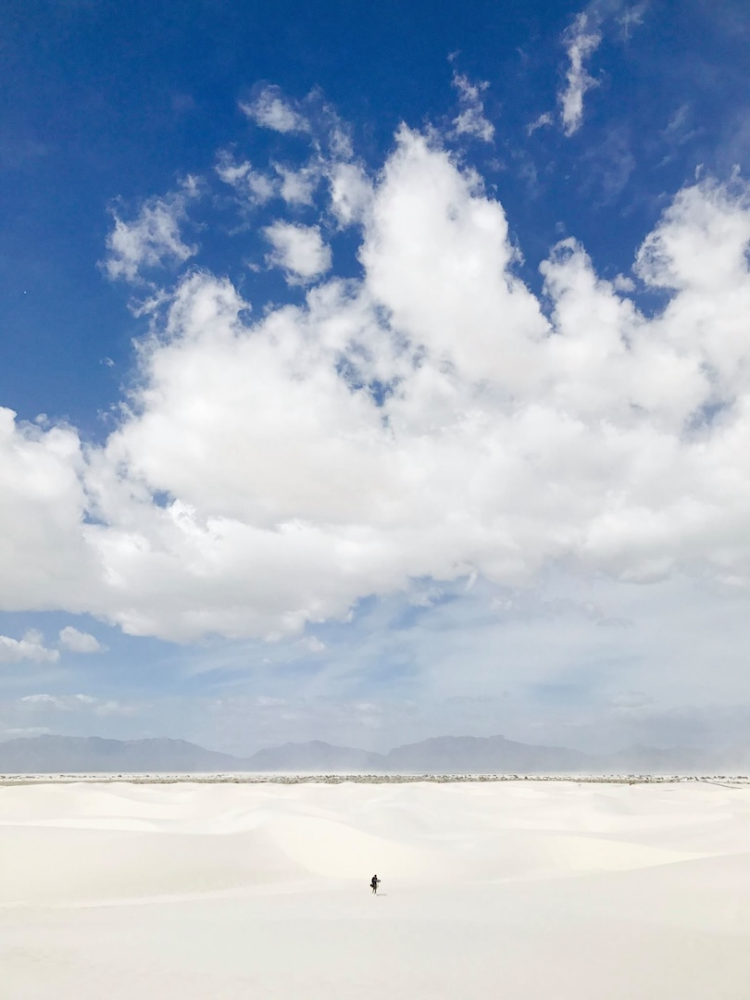

Mike Ritchie
Immersive Audio Engineer and Composer

For over 15 years I've been creating immersive soundscapes using the latest advancements in spatial audio. As a sonic storyteller, I specialize in tasteful and evocative audio with an emphasis on realism and immersion. I strive to create meaningful artistic experiences with emotional intention always at the forefront.
- Mike Ritchie
I had the joy of managing Mike for nine years at Headspace Studio and after at Felix & Paul Studios, and watching him grow has been one of the real pleasures of my career. He's a bit of a Swiss Army knife: equally at home on location recording sound, in the studio editing, or at the desk mixing, with a rare depth of expertise in spatial audio. What always stood out, though, was his attitude - endlessly positive, flexible when plans changed last minute, and required little supervision in driving a project from idea to delivery. I knew that if Mike was on a job, it would be handled with care and reliability, and that's exactly the kind of partner you want as a freelancer.
- Jean-Pascal Beaudoin, Audio Director, Felix & Paul Studios